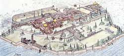

Great Palace
This was the residence of the emperors and was sited by the Bosphorus, which was a channel of water connecting the Black Sea with the Sea of Marmara. It was built next to the hippodrome, which was where chariot racing took place. The hall of the palace had huge bronze doors, which led to it being given the name 'Khalke' which means 'Brazen House'. The palace contained the quarters of the imperial guard and was also the place where the emperor held joint meetings of the Senate and Consistorium. The heart of the palace was called the 'Daphne', which consisted of a series of buildings, terraces and gardens. From here led a passageway to the hippodrome and the emperor's 'royal box'.

Great Palace